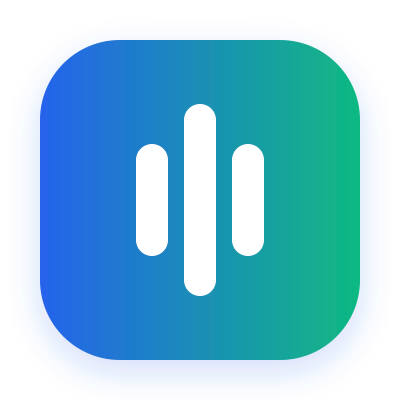

Una preferencia alta
no siempre es defendible.
Las métricas estáticas pueden mostrar liderazgo, pero no siempre alertan su fragilidad.

Opina+Las métricas estáticas pueden mostrar liderazgo, pero no siempre alertan su fragilidad.
Tu opinión es una señal.